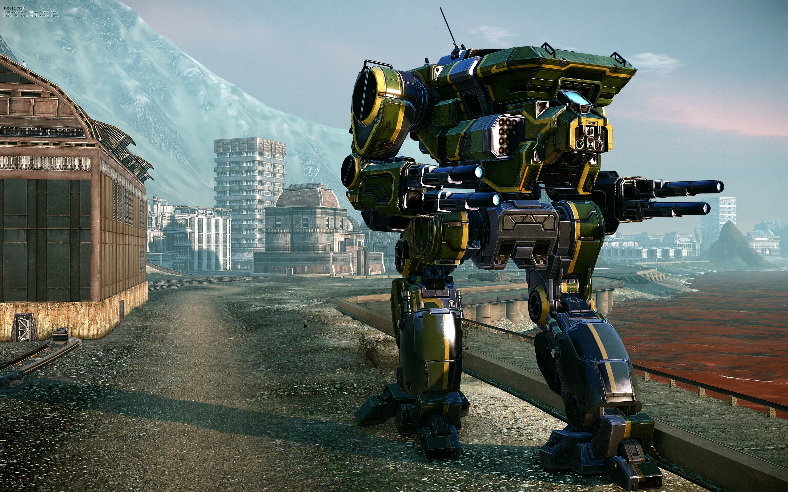
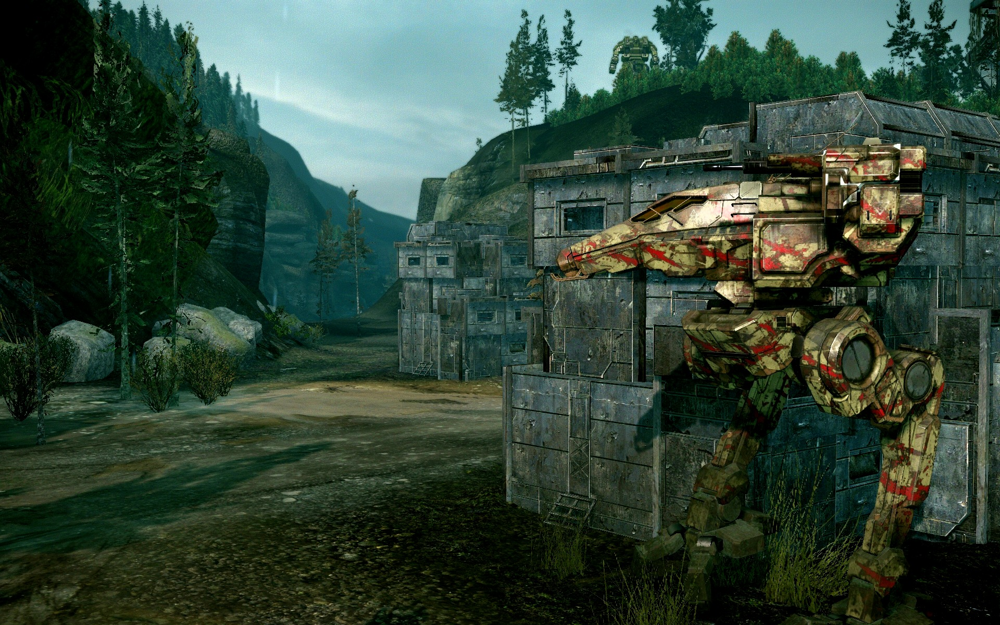
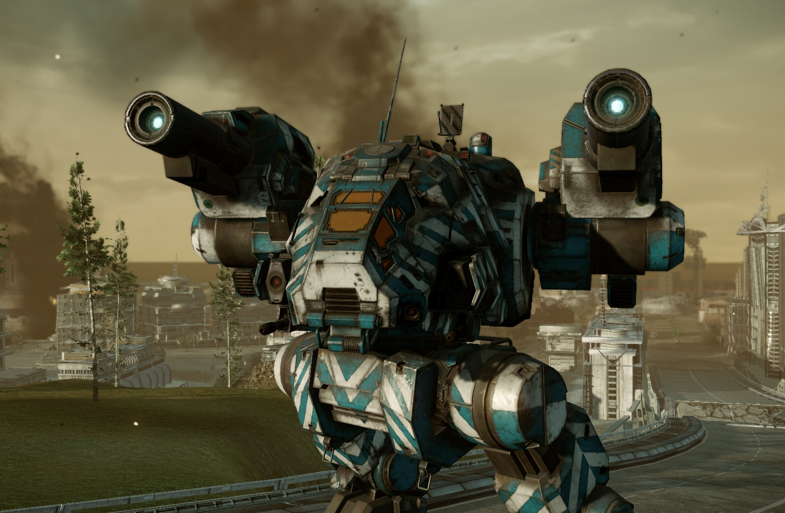
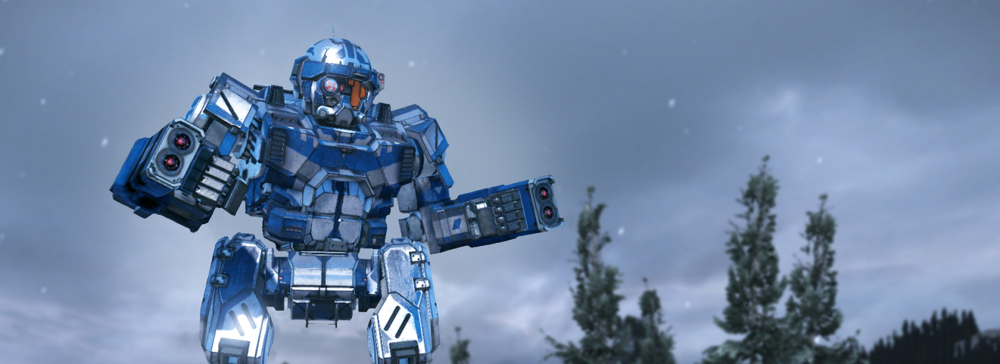
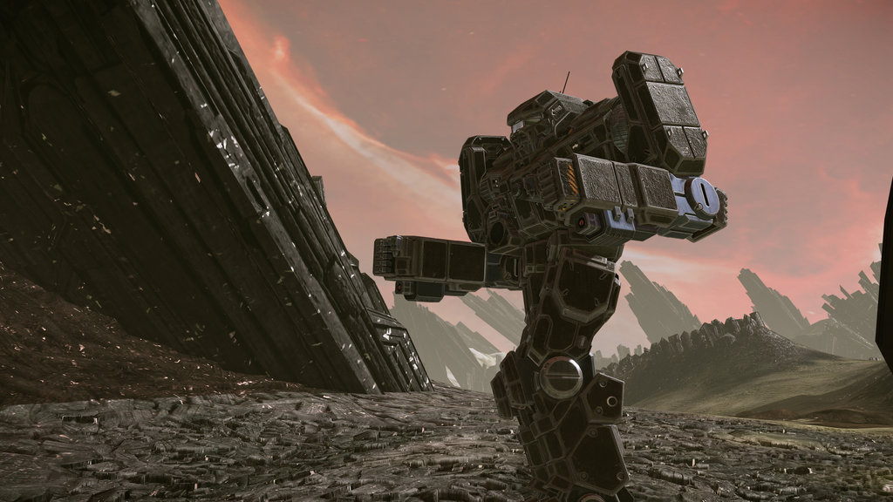
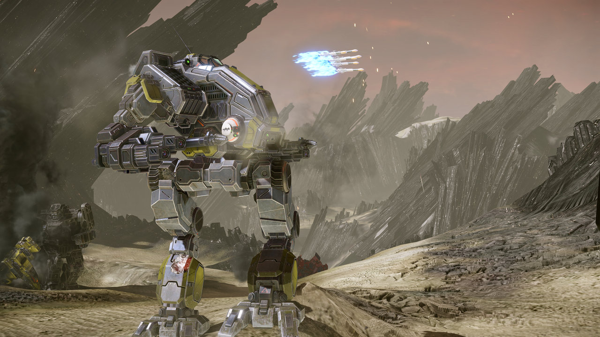
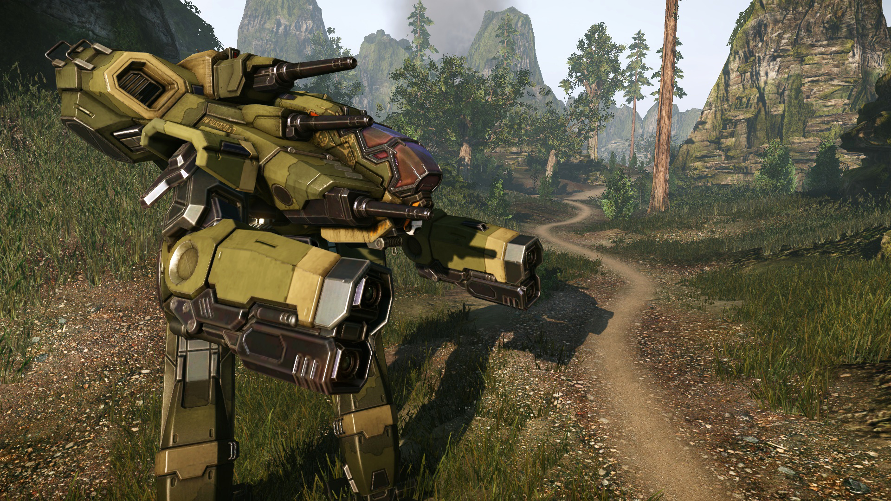
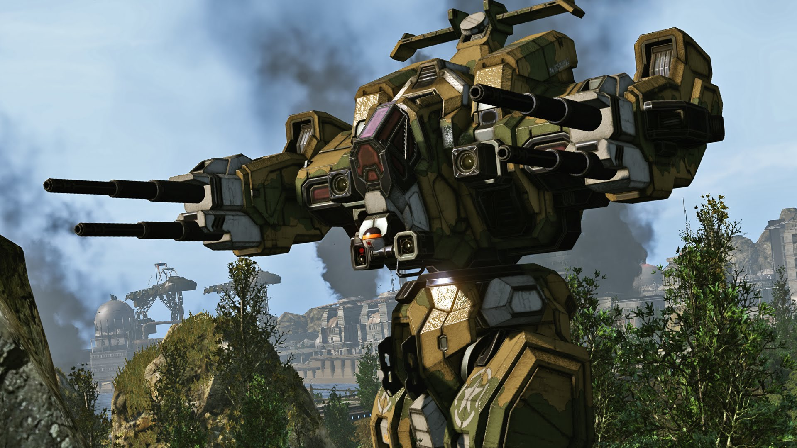
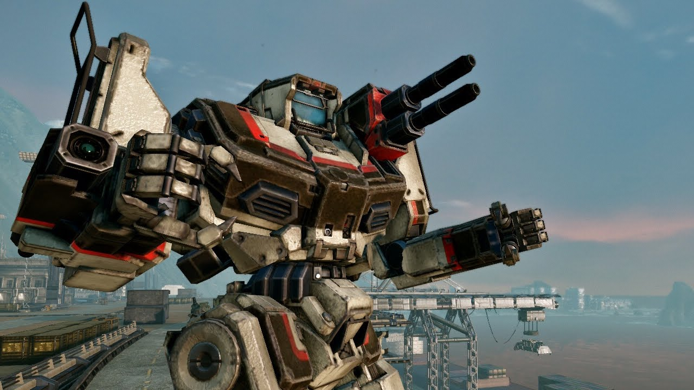

A few facts about the latest installment in the MechWarrior universe









Webpage designed and written by James R. Vaughan
MechWarrior Online is a free to play game launched in 2013 which is the next installment in the MechWarrior series of games. It involves piloting a giant, lumbering robot called a battlemech, and fighting other battlemechs in a wartime scenario. MechWarrior Online, like all MechWarrior games, is based on the BattleTech table-top game which was developed in 1984, which is a game rich in lore and strategy. MechWarrior Online was created by Piranha Games Interactive, a Canadian game development studio, and runs on CryEngine.
Gameplay
The gameplay centers around epic 12 vs 12 battles in large, well-designed maps set in other-worldly planets. One of the best parts of the game is the ability to customize one's mechs and can experiment with different kinds of loadouts and strategies. MechWarriors can tweak the weapons, equipment, engines, jumpjets, heatsinks, armor levels, equipment, camo, and much more of their mech to their liking.
Game modes:
Domination: Teams must maintain control of a large target area for 1 minute. Control time is accrued when the areas is occupied by friendly mechs, and no enemy mechs are within the area.
Conquest: Teams must gather 750 resource points. Mechs can take over resource production facilities from the enemy, or lose them to the enemy mechs. Over time, these resource points produce resources.
Assault: Each team has a base. They must protect their base, and either take over the enemy base or destroy all enemy mechs. Control of a bases is gained by occupying the area for a time while no enemy mechs are on the base.
Skirmish: Team must destroy all enemy mechs.
Invasion: Attackers must penetrate the enemy base and destroy several key buildings inside the base
Scouting: Attacking team must gather data points, defending team must defend the data points
Escort: Attacking team must destroy a VIP mech who traverses the terrain towards an extraction point. Defending team must defend their VIP at all costs.
In addition to regular player-versus-player games, MechWarrior Online also allows players to join specific factions, and battle against other factions for glory and in-game currency. If your particular faction fares well, it can take over more planets in the in-game galaxy and through that earn the faction members prestige and additional income.
Completing a game grants currency known as C-bills, which can be used to purchase new mechs, upgrade current mechs with better equipment such as weapons and engines.
Completing games may also grant things such as mech currency (MC), which can be used to purchase mechs and equipment, and can also purchase mech bays and cosmetic items such as camo patterns, colors, and in-cockpit decorations.
Completing games also grants experience (XP) which can be used to upgrade pilot skills which offer numerous boosts to the mech which was piloted during the match.
While MWO is free to play, players can purchase C-bills and MC with cash, so that they can more quickly obtain new mechs, equipment, and cosmetic items.
Mechs
There are over 70 different mechs in the game, and Piranha Games Interactive continuously is adding more over time. These mechs are directly descended from the BattleTech franchise, and many of them are familiar MechWarrior mechs such as the Timber Wolf, the Mad Dog, the Nova, the Summoner, the Kit Fox, and many more. Each mech has 3-8 different mech variants, each with their own look and feel, cockpit design, hardpoint layouts and quirks which make them unique
Mech attributes:
Faction: Clan or Inner Sphere, the two factions have different design styles and use different weapons and equipment
Classification: Light, Medium, Heavy, or Assault
Max tonnage
Overall height, size, and shape
Weapon mounts locations
Layout and sizes of differing components
Component health for head, center torso, left and right torsos, left and right arms, and left and right legs
Adjustable armor amounts for front and back of center, left, and right torsos
Adjustable armor amounts for head, arms, and legs
Number and types of weapon hardpoints, whether energy, ballistic, missile, or anti-missile hardpoints
Ability to carry electronic countermeasures (ECM), MASC, or jumpjets
Number of slots in each component
Maximum engine rating
Speed, acceleration, deceleration, twist speed for each engine type
Max twisting angle and pitch angle
Ability to use special structure types which use slots but save tonnage
Stock armament
Cost
Equipment
In addition to an expansive set of mechs to choose from, MechWarrior Online also provides many different ways to outfit a particular mech. There are many different kinds of weapons, which are too long to list in entirety, and also there are different types of equipment and modules that help your mech fulfill its intended role. Because of MechWarrior Online's vast customization options, no two mech is the same, and thus replayability is high as every game plays differently depending on what mech you are using and what tools you've equipped on that mech. Below is a partial list of the different types of equipment one may place in their mech.
Weapon types:
Small, medium, large, and extended-range lasers
Small, medium, and large pulse lasers
Short-range unguided missiles in clusters of 2, 4, or 6
Short-range guided missiles in clusters of 2, 4, or 6
Long range guided missiles in clusters of 5, 10, 15, and 20
Flame throwers
Machine guns
Gauss rifles
Particle Projectile Cannon (PPC)
Autocannons which do 2, 5, 10, or 20 damage
Shotguns which fire 2, 5, 10, or 20 pellets
Weapon attributes:
Optimal range
Max range
Cooldown
Heat generation
Firing pattern
Projectile velocity
Beam duration
Enemy mech's cockpit shake
Jam chance (only on ultra-autocannons)
Weight in tons
Ammo consumption
Slots occupied in mech
Cost
Equipment:
Standard and double heatsinks: Having more heatsinks allow a mech to dissipate heat faster
Electronic countermeasures (ECM): Increases time needed for enemy missile locks, and can disable nearby enemy ECM
Antimissile system (AMS): Shoots down incoming missiles
NARC missile: When attached to an enemy mech, this missile decreases the lock time for friendly missiles
CASE: Prevents weapon and ammo explosions from harming nearby components
Active probe: Allows the ability to target shutdown enemy mechs, and counters enemy ECM
TAG laser: When pointed at an enemy mech, this laser improve friendly missile lock speed
Artemis IV: Improves missile lock time and tracking strength
Targeting computer: Allows for improved zoom abilities, faster projectile speed, improved laser range, and improved critical hit chance
MASC: Temporarily boosts top speed, acceleration, and deceleration, but will damage legs if used too much
Standard engines: The higher engine's rating, the faster your mech will run, accelerate and decelerate, reverse, and turn
XL engines: These engines are lightweight but take up extra slots, and can destroy your mech if your side torso is taken out
Jumpjets: Allows a mech to fly, in order to reach higher ground, shoot at enemy mechs, or dodge projectiles
Mech Modules:
360 target retention: Allows your mech to maintain a target lock on an enemy who is out of sight behind you
Advanced zoom: Allows your mech to an additional 4x zoom
Air strike accuracy: Decreases bombardment area of airstrikes
Artillery accuracy: Decreases bombardment area of artillery
Capture accelerator: Improves rate of capturing objectives
Hill climb: Improves rate of climbing up hills
Improved gyros: Decreases cockpit shake from enemy hits
Radar deprivation: Enemy missile locks on your mech are broken as soon as you leave their line of sight
Seismic sensor: When standing still, your mech can detect moving enemy mechs in 180m range
Sensor range: Increases max range at which you may target lock enemy mechs
Shock absorbance: Decreases fall damage
Speed retention: Improves speed even when one leg is destroyed
Target decay: Increases the time a target lock lasts after enemy mech has gone out of line of sight
Target info gathering: Decreases time taken to acquire data about an enemy mech's weapon loadout and component health status
Weapon Modules:
Weapon cooldown modules: Decreases the cooldown for a weapon
Weapon range modules: Increases a weapon's max range
Consumables:
Artillery Strike: Calls down an artillery barrage on your chosen target location
Airstrike: Calls in an aerial bombardment on your location of choice
Cool-Shot: Temporarily increases the cooling rate of your mech
UAV: Unmanned drone which spot enemy mechs below it.
Strategy
This game has a lot of variety and allows players to play as they like. Below are some of the general strategies players often employ on the battlefield.
Skirmishing: Using a small, very fast mech to dodge enemy fire, distract, and harass enemies
Sniping: Using long range lasers or projectiles to chip away at enemy mechs
Laser boating: Using masses of medium-ranged or short-ranged lasers to damage nearby mechs
Dakka Mechs: Using primarily autocannons to deal a continuous stream of damage with little heat generation
Brawling: Using mainly short-ranged weapons, usually on a very tough mech, in order to break enemy lines
SRM bombing: Using a fast mech with lots of SRM's to run around near enemies and deal massive damage
LRM boating: Using a mech which has large amounts of long range missiles to damage far-away mechs
Pop-tarting: Using jumpjets to jump above cover, hit the enemy, then fall behind cover before getting return fire
Combination builds: Using a combination of different weapons for a more balanced approach
Summary
In summary, this is a fun game which can definitely have its moments. The game is free to play, provides a lot of options for experimentation and customization and varied strategies, has a large following, and involves a style of play which is unique to the MechWarrior franchise.